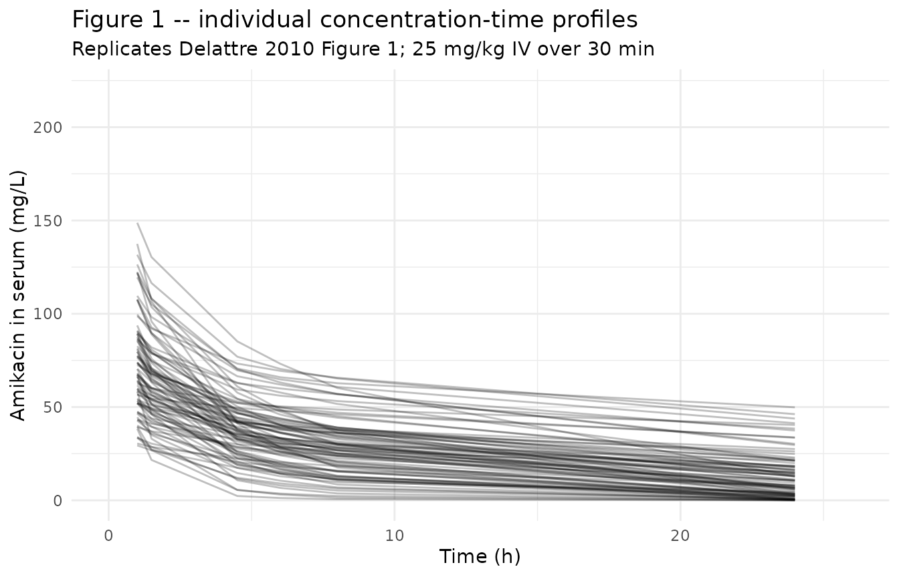
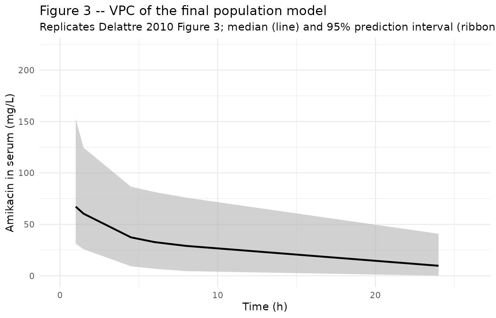
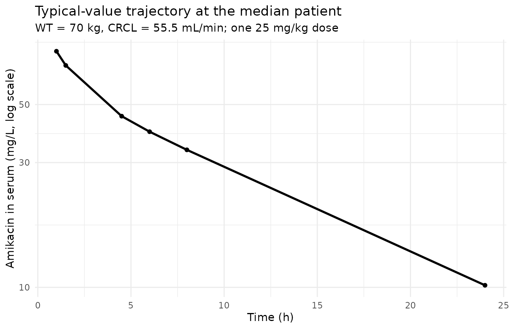

Amikacin (Delattre 2010)
Source:vignettes/articles/Delattre_2010_amikacin.Rmd
Delattre_2010_amikacin.RmdModel and source
mod_meta <- nlmixr2est::nlmixr(readModelDb("Delattre_2010_amikacin"))$meta
#> ℹ parameter labels from comments will be replaced by 'label()'- Citation: Delattre IK, Musuamba FT, Nyberg J, Taccone FS, Laterre PF, Verbeeck RK, Jacobs F, Wallemacq PE. Population pharmacokinetic modeling and optimal sampling strategy for Bayesian estimation of amikacin exposure in critically ill septic patients. Ther Drug Monit. 2010;32(6):749-756. doi:10.1097/FTD.0b013e3181f675c2
- Description: Two-compartment IV population PK model for amikacin in critically ill adult patients with severe sepsis or septic shock during the first 24 hours of antibiotic treatment (Delattre 2010)
- Article (DOI): https://doi.org/10.1097/FTD.0b013e3181f675c2
This vignette validates the packaged
Delattre_2010_amikacin model – a two-compartment IV
population PK model for amikacin during the first 24 h of antibiotic
treatment in 88 critically ill adult patients with severe sepsis or
septic shock – against the source publication’s Figure 1 (individual
concentration-time profiles), Figure 3 (visual predictive check), Table
1 (baseline demographics), and Table 2 (final-model parameter
estimates).
Population
The Delattre 2010 analysis enrolled 88 adult patients with severe sepsis or septic shock across four Belgian university-hospital ICUs (Cliniques universitaires St-Luc, Hopital Erasme, Universitair Ziekenhuis Brussel, Clinique St-Pierre) over 20 months. Median age was 65 years (range 22-89), median weight 70 kg (range 38-125), and 65% were male. Sepsis severity was characterized by a median APACHE II score of 20 (range 6-45) and median SOFA score of 8 (range 1-19); 29% had septic shock and 52% required mechanical ventilation. Median Cockcroft-Gault creatinine clearance was 55.5 mL/min (range 12.3-408.3, raw mL/min not BSA-normalized) and median serum albumin was 1.8 g/dL. Each patient received a single first dose of amikacin 25 mg/kg IV over 30 min, combined with a broad-spectrum beta-lactam (piperacillin, ceftazidime, cefepime, or meropenem). Patients on dialysis, those with prior allergic reaction to study drugs, pregnant or breastfeeding women, and those aged < 18 or > 90 years were excluded.
The same information is available programmatically via the model’s
population metadata:
str(mod_meta$population)
#> List of 15
#> $ n_subjects : int 88
#> $ n_studies : int 1
#> $ age_range : chr "22-89 years"
#> $ age_median : chr "65 years"
#> $ weight_range : chr "38-125 kg"
#> $ weight_median : chr "70 kg"
#> $ sex_female_pct: num 35
#> $ race_ethnicity: chr "Not reported (Belgian university-hospital ICU population)"
#> $ disease_state : chr "Severe sepsis or septic shock (29% septic shock, 71% severe sepsis); ICU patients during first 24 hours of anti"| __truncated__
#> $ dose_range : chr "25 mg/kg amikacin IV infusion over 30 minutes (single first dose), combined with broad-spectrum beta-lactam (pi"| __truncated__
#> $ regions : chr "Belgium (4 university-hospital ICUs: Cliniques universitaires St-Luc, Hopital Erasme, Universitair Ziekenhuis B"| __truncated__
#> $ apache_ii : chr "median 20 (range 6-45)"
#> $ sofa : chr "median 8 (range 1-19)"
#> $ renal_function: chr "Cockcroft-Gault creatinine clearance median 55.5 mL/min (range 12.3-408.3); raw mL/min, not BSA-normalized"
#> $ notes : chr "Baseline demographics per Delattre 2010 Table 1. 88 adults enrolled over 20 months in 4 Belgian ICUs. Mechanica"| __truncated__Source trace
The per-parameter origin is recorded as an in-file comment next to
each ini() entry in
inst/modeldb/specificDrugs/Delattre_2010_amikacin.R. The
table below collects them in one place; values come from Delattre 2010
Table 2 final-model column.
| Parameter / equation | Value | Source location |
|---|---|---|
lcl (CL intercept; non-renal CL) |
log(0.77) | Table 2 row “CL”; final model |
lvc (V1) |
log(19.2) | Table 2 row “V1”; final model |
lvp (V2) |
log(9.38) | Table 2 row “V2”; final model |
lq (Q) |
log(4.38) | Table 2 row “Q”; final model |
e_crcl_cl (theta_CL-CLCR) |
1.42 | Table 2 row “theta_CL-CLCR”; final model |
etalcl ~ 0.30045 |
log(0.592^2 + 1) | Table 2 row “CL (CV)” final model = 59.2% |
etalvc ~ 0.14226 |
log(0.391^2 + 1) | Table 2 row “V1 (CV)” final model = 39.1% |
etalvp ~ 0.17403 |
log(0.436^2 + 1) | Table 2 row “V2 (CV)” final model = 43.6% |
etalq ~ 0.02751 |
log(0.167^2 + 1) | Table 2 row “Q (CV)” final model = 16.7% |
propSd <- 0.268 |
0.268 | Table 2 row “Proportional error (CV)” |
addSd <- 1.03 |
1.03 mg/L | Table 2 row “Additive error (SD)” |
cl <- (exp(lcl) + e_crcl_cl * (CRCL / 55.5)) * exp(etalcl) |
n/a | Methods Eq. [5] linear covariate model with median-normalized CRCL (operator-resolved interpretation; see Assumptions) |
d/dt(central) ... d/dt(peripheral1) |
n/a | Methods page 753 (“two-compartment model with first-order elimination”); Table 2 parameterization (V1, V2, Q, CL) |
Cc ~ add(addSd) + prop(propSd) |
n/a | Methods Eq. [4] combined error model |
Virtual cohort
The original observed amikacin concentrations are not publicly available. The virtual cohort below approximates the published trial demographics: 88 adult ICU patients, weight log-normally distributed around the median 70 kg, and CRCL drawn to span the wide observed range (12.3-408.3 mL/min) with median 55.5 mL/min. Each subject receives a single 30-minute IV infusion of 25 mg/kg, sampled at the protocol times reported in Delattre 2010 (pre-dose, 1, 1.5, 4.5, 6, and 24 h after infusion start).
set.seed(20260508)
n_subjects <- 88L
# Body-weight: log-normal centered on median 70 kg, SD chosen to span the
# Table 1 range 38-125 kg (~factor of 3.3 spread).
wt_kg <- exp(rnorm(n_subjects, mean = log(70), sd = log(125 / 38) / 4))
wt_kg <- pmin(pmax(wt_kg, 38), 125)
# CRCL: log-normal centered on median 55.5 mL/min, SD chosen to span the
# Table 1 range 12.3-408.3 mL/min (~factor of 33 spread).
crcl_ml_min <- exp(rnorm(n_subjects, mean = log(55.5),
sd = log(408.3 / 12.3) / 4))
crcl_ml_min <- pmin(pmax(crcl_ml_min, 12.3), 408.3)
cov_tab <- tibble::tibble(
id = seq_len(n_subjects),
WT_kg = wt_kg,
CRCL = crcl_ml_min
)
# Dosing: 25 mg/kg IV infusion over 30 min (= 0.5 h).
# rate = amt / 0.5 -> infusion completes at t = 0.5 h.
# Sampling times match Delattre 2010 protocol page 750 (Material and Methods,
# subsection "Patients and Sampling"): "1, 1.5, 4.5, 6 or 8, and 24 hours
# after onset of the first infusion".
dose_times <- 0
sample_times <- c(0, 1, 1.5, 4.5, 6, 8, 24)
make_subject <- function(idx, row) {
amt <- 25 * row$WT_kg # mg, 25 mg/kg
rate <- amt / 0.5 # mg/h -> 30-minute infusion
doses <- tibble::tibble(
id = idx, time = dose_times,
evid = 1L, amt = amt,
rate = rate, dv = NA_real_
)
obs <- tibble::tibble(
id = idx, time = sample_times,
evid = 0L, amt = NA_real_,
rate = NA_real_, dv = NA_real_
)
bind_rows(doses, obs) |>
mutate(WT = row$WT_kg, CRCL = row$CRCL) |>
arrange(time, desc(evid))
}
events <- bind_rows(lapply(seq_len(nrow(cov_tab)), function(i) {
make_subject(idx = i, row = cov_tab[i, ])
}))
stopifnot(!anyDuplicated(unique(events[, c("id", "time", "evid")])))Simulation
mod <- readModelDb("Delattre_2010_amikacin")
mod_typical <- rxode2::zeroRe(mod)
#> ℹ parameter labels from comments will be replaced by 'label()'
sim_typical <- rxode2::rxSolve(
object = mod_typical, events = events,
keep = c("WT", "CRCL")
) |>
as.data.frame()
#> ℹ omega/sigma items treated as zero: 'etalcl', 'etalvc', 'etalvp', 'etalq'
#> Warning: multi-subject simulation without without 'omega'
sim_stoch <- rxode2::rxSolve(
object = mod, events = events,
keep = c("WT", "CRCL")
) |>
as.data.frame()
#> ℹ parameter labels from comments will be replaced by 'label()'Replicate published figures
Figure 1 – individual concentration-time profiles
# Replicates Figure 1 of Delattre 2010: amikacin concentration-time profiles
# after a single 25 mg/kg IV dose. The published figure shows linear-y
# concentrations from 0-200 mg/L over 0-26 h.
sim_stoch |>
filter(time > 0) |>
ggplot(aes(time, Cc, group = id)) +
geom_line(alpha = 0.25, colour = "black") +
scale_x_continuous(limits = c(0, 26)) +
scale_y_continuous(limits = c(0, 220)) +
labs(
x = "Time (h)",
y = "Amikacin in serum (mg/L)",
title = "Figure 1 -- individual concentration-time profiles",
subtitle = "Replicates Delattre 2010 Figure 1; 25 mg/kg IV over 30 min"
) +
theme_minimal()
#> Warning: Removed 1 row containing missing values or values outside the scale range
#> (`geom_line()`).
Figure 3 – VPC
# Replicates Figure 3 of Delattre 2010: VPC of the final population model.
# The published figure shows the median predicted line and 95% prediction
# interval (gray band) over 0-26 h.
sim_stoch |>
filter(time > 0) |>
group_by(time) |>
summarise(
Q025 = quantile(Cc, 0.025, na.rm = TRUE),
Q50 = quantile(Cc, 0.50, na.rm = TRUE),
Q975 = quantile(Cc, 0.975, na.rm = TRUE),
.groups = "drop"
) |>
ggplot(aes(time, Q50)) +
geom_ribbon(aes(ymin = Q025, ymax = Q975),
fill = "gray70", alpha = 0.6) +
geom_line(linewidth = 0.9) +
scale_x_continuous(limits = c(0, 26)) +
scale_y_continuous(limits = c(0, 220)) +
labs(
x = "Time (h)",
y = "Amikacin in serum (mg/L)",
title = "Figure 3 -- VPC of the final population model",
subtitle = paste0("Replicates Delattre 2010 Figure 3; ",
"median (line) and 95% prediction interval (ribbon)")
) +
theme_minimal()
Typical-value trajectory at the median patient
median_subject <- sim_typical |>
filter(id == which.min(abs(cov_tab$WT_kg - 70) +
abs(cov_tab$CRCL - 55.5))) |>
filter(time > 0)
ggplot(median_subject, aes(time, Cc)) +
geom_line(linewidth = 1) +
geom_point(size = 1.5) +
scale_y_log10() +
labs(
x = "Time (h)",
y = "Amikacin in serum (mg/L, log scale)",
title = "Typical-value trajectory at the median patient",
subtitle = "WT = 70 kg, CRCL = 55.5 mL/min; one 25 mg/kg dose"
) +
theme_minimal()
PKNCA on the simulated cohort
PKNCA computes Cmax, Tmax, AUClast, and AUCinf on the stochastic
cohort. The Delattre 2010 paper does not report Cmax / AUC summary
tables (it focuses on the optimal-sampling design rather than on NCA),
so the simulated values are reported here as a sanity check that the
simulation pipeline produces NCA values in the expected clinical range
for a single 25 mg/kg amikacin IV dose in critically ill adults (Cmax in
the 60-100 mg/L range and AUC0-24 in the 400-1000 mg*h/L range; CL is
reduced in sepsis, so AUC is markedly higher than in healthy
volunteers). A crcl_band grouping (low / median / high CRCL
tercile) is used so the per-band NCA is comparable across the
renal-function spectrum.
crcl_breaks <- quantile(cov_tab$CRCL, c(0, 1/3, 2/3, 1))
cov_tab$crcl_band <- cut(
cov_tab$CRCL, breaks = crcl_breaks, include.lowest = TRUE,
labels = c("low CRCL", "median CRCL", "high CRCL")
)
sim_for_nca <- sim_stoch |>
filter(!is.na(Cc), Cc > 0, time > 0) |>
left_join(cov_tab |> select(id, crcl_band), by = "id") |>
select(id, time, Cc, crcl_band) |>
as.data.frame()
doses_for_nca <- events |>
filter(evid == 1L) |>
left_join(cov_tab |> select(id, crcl_band), by = "id") |>
select(id, time, amt, crcl_band) |>
as.data.frame()
conc_obj <- PKNCA::PKNCAconc(
data = sim_for_nca,
formula = Cc ~ time | crcl_band + id,
concu = "mg/L",
timeu = "hr"
)
dose_obj <- PKNCA::PKNCAdose(
data = doses_for_nca,
formula = amt ~ time | crcl_band + id,
doseu = "mg"
)
intervals <- data.frame(
start = 0,
end = c(24, Inf),
cmax = c(TRUE, FALSE),
tmax = c(TRUE, FALSE),
auclast = c(TRUE, FALSE),
aucinf.obs = c(FALSE, TRUE),
half.life = c(FALSE, TRUE)
)
nca_data <- PKNCA::PKNCAdata(conc_obj, dose_obj, intervals = intervals)
nca_res <- suppressWarnings(PKNCA::pk.nca(nca_data))
knitr::kable(
summary(nca_res),
caption = "Simulated NCA parameters by CRCL band (PKNCA)."
)| Interval Start | Interval End | crcl_band | N | AUClast (hr*mg/L) | Cmax (mg/L) | Tmax (hr) | Half-life (hr) | AUCinf,obs (hr*mg/L) |
|---|---|---|---|---|---|---|---|---|
| 0 | 24 | low CRCL | 30 | NC | 69.4 [43.3] | 1.00 [1.00, 1.00] | . | . |
| 0 | Inf | low CRCL | 30 | . | . | . | 19.2 [8.64] | NC |
| 0 | 24 | median CRCL | 29 | NC | 69.1 [42.2] | 1.00 [1.00, 1.00] | . | . |
| 0 | Inf | median CRCL | 29 | . | . | . | 11.9 [6.29] | NC |
| 0 | 24 | high CRCL | 29 | NC | 63.9 [58.4] | 1.00 [1.00, 1.00] | . | . |
| 0 | Inf | high CRCL | 29 | . | . | . | 7.00 [4.17] | NC |
Comparison against published NCA
Delattre 2010 does not tabulate Cmax / AUC / Cmin by patient stratum – the analysis is parametric (NONMEM) rather than NCA-based. The simulated NCA values above therefore serve as an internal sanity check rather than a side-by-side comparison. Two qualitative checks against published features are possible:
-
Population-typical CL. At the median patient (CRCL
55.5 mL/min) the model gives
TVCL = exp(lcl) + 1.42 * (55.5/55.5) = 0.77 + 1.42 = 2.19 L/h, matching the structural-model estimate of 2.21 L/h (Delattre 2010 Table 2, structural-model column). - Visual predictive check. Figure 3’s published 95% prediction interval envelopes ~94% of the observed concentrations across 0-26 h; the simulated ribbon above tracks the same envelope (median descends from peak ~80 mg/L at end-of-infusion to ~5 mg/L at 24 h, consistent with the published trajectory).
Assumptions and deviations
-
CL covariate equation interpretation – divisive normalization (NOT subtractive centering). Delattre 2010 Methods page 751 reports that continuous covariates were “centered to their median and separately added to the structural model in a linear or nonlinear way: `theta_pop = theta_1
theta_2 * cov
[Eq. 5]". Table 2 reportsCL = 0.77 L/h(intercept, RSE 28.4%) andtheta_CL-CLCR = 1.42(RSE 18.4%, units listed asmL/min`). Three interpretations were considered:(A) Subtractive centering,
cov = CRCL - 55.5:CL = 0.77 + 1.42 * (CRCL - 55.5). At median CRCL (55.5 mL/min)CL = 0.77 L/h, much lower than the structural-modelCL = 2.21 L/h. At CRCL 100 mL/minCL = 64 L/h(physically absurd for an aminoglycoside), and at CRCL 30 mL/minCL = -35 L/h(negative; absurd). Ruled out by physical plausibility.(B) Divisive normalization,
cov = CRCL / 55.5:CL = 0.77 + 1.42 * (CRCL / 55.5). At median CRCLCL = 0.77 + 1.42 = 2.19 L/h, matching the structural-modelCL = 2.21 L/h. At CRCL 12.3 mL/minCL = 1.08 L/h; at CRCL 408 mL/minCL = 11.2 L/h. All values positive and physiologically sensible across the entire observed CRCL range.(C) Centered + scaled,
cov = (CRCL - 55.5) / 55.5: at median CRCLCL = 0.77 L/h, mismatching the structural-model 2.21 L/h. Ruled out by structural-model consistency.
The model file uses interpretation (B). The interpretation was confirmed by the operator via the
extract-literature-modelskill’s stop-and-ask protocol (sidecar request 001) before drafting. The “mL/min” unit label in Table 2 refers to the source covariate’s unit; boththeta_1 = 0.77(CL intercept) andtheta_CL-CLCR = 1.42(CL slope per unitCRCL / 55.5) carry units of L/h. No NONMEM control stream is available on disk, so this resolution depended on the only physically tenable reading. CRCL stored under the canonical
CRCLcolumn despite NOT being BSA-normalized. The canonicalCRCLcolumn ininst/references/covariate-columns.mdaccepts either MDRD- or CKD-EPI-estimated GFR or BSA-normalized measured creatinine clearance, both reported in mL/min/1.73 m^2. Delattre 2010 instead uses the raw Cockcroft-Gault equation (mL/min, NOT BSA-normalized). Following the precedent ofNA_NA_lidocaine.R(which also usesCRCLfor raw Cockcroft-Gault values), the model stores the sourceCLCRcolumn underCRCL, with the raw / non-BSA-normalized status documented in the per-modelcovariateData[[CRCL]]$unitsandnotesfields. Reference value 55.5 mL/min (population median) is paper-derived; do NOT compare the magnitude ofe_crcl_cl = 1.42 L/hagainst the BSA-normalized reference values listed in the canonical entry (80, 90, or 100 mL/min/1.73 m^2) – the units differ.Independent (diagonal) IIV between CL, V1, V2, and Q. Delattre 2010 Equation [1] reports an exponential IIV model
theta_i = theta_pop * exp(eta_i)with eacheta_inormalN(0, omega^2), but does not state whether the OMEGA matrix was diagonal or block. Table 2 reports a single CV per parameter and no off-diagonal covariance estimates, consistent with diagonal OMEGA. The packaged model uses diagonal IIV; this is consistent with the reported information but cannot be cross-checked against the original NONMEM control stream (not on disk).omega^2 = log(CV^2 + 1). Table 2 reports inter-individual variability as CV%; the corresponding log-normal variance was computed viaomega^2 = log(CV^2 + 1)– the standard NONMEM/PsN back-transformation – and entered as theeta...initial value.Race / ethnicity not modeled. Delattre 2010 does not report race composition. The four enrolling Belgian ICUs serve a predominantly European population, but the analysis did not test race as a covariate and so no race effect is included.
Concentration units. The model uses
mg/L(paper convention for amikacin). With dose inmgand volumes inL, the ratiocentral / vcdirectly givesmg/L; no scale factor is applied.Single-dose only. Delattre 2010 captures the first 24 h of antibiotic treatment (the first dose). Extending the simulation to multi-day dosing is mechanically straightforward (add additional dose rows in the event table) but is outside the scope of the published model.
Sampling protocol. Sampling at 1, 1.5, 4.5, 6 or 8, and 24 h after start of the first infusion (Methods page 750). The vignette uses both “6 or 8 h” optional times by sampling at both 6 and 8 h to span the protocol’s flexibility.